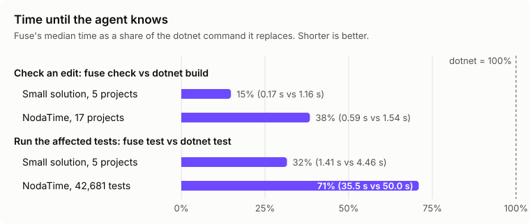

Results
Fuse was measured against the real dotnet build and dotnet test on a small fixture solution and on NodaTime, a large open-source library.

Speed and Accuracy
| Small solution (fixture) | NodaTime | |
|---|---|---|
| Size | 5 projects, 22 tests | 17 projects, 42,681 tests |
Check an edit vs dotnet build | 0.17 s vs 1.16 s | 0.59 s vs 1.54 s |
| Warm check, body edit (P50 / P95) | 166 / 278 ms | 526 / 666 ms |
| Warm check, signature edit (P50 / P95) | 196 / 2,617 ms | 1,463 / 7,971 ms |
Affected tests vs dotnet test | 1.41 s vs 4.46 s | 35.5 s vs 50.0 s |
| Share of tests run | 15 percent | all |
| Compiler errors missed | 0 in 30 cases | 0 in 20 cases |
| Failing tests missed | 0 in 10 cases | 0 in 5 cases |
| Engine memory | 241 MB | 832 MB |
Reading the Numbers
- On NodaTime the generated changes reach core types, so every test still runs. The saving there comes from skipping MSBuild, not from selecting fewer tests.
- The signature-edit P95 includes the first such edit after the engine starts, which loads every dependent project.
- NodaTime builds with warnings as errors, so each check there also runs the analyzers that can report a warning. That is why its body-edit check is slower than the small solution's.
How It Was Measured
- Correctness: generated edits that break or keep the build. An error the build reports and Fuse does not is "missed"; the reverse is "contradicted". Both were 0.
- Test selection: generated behavior changes that make tests fail. Failing test names are compared exactly with a full
dotnet testrun. - Latency: repeated warm checks after body and signature edits, through the installed
fusecommand.
The evals live in evals/Fuse.Evals, and every result file is in evals/results.